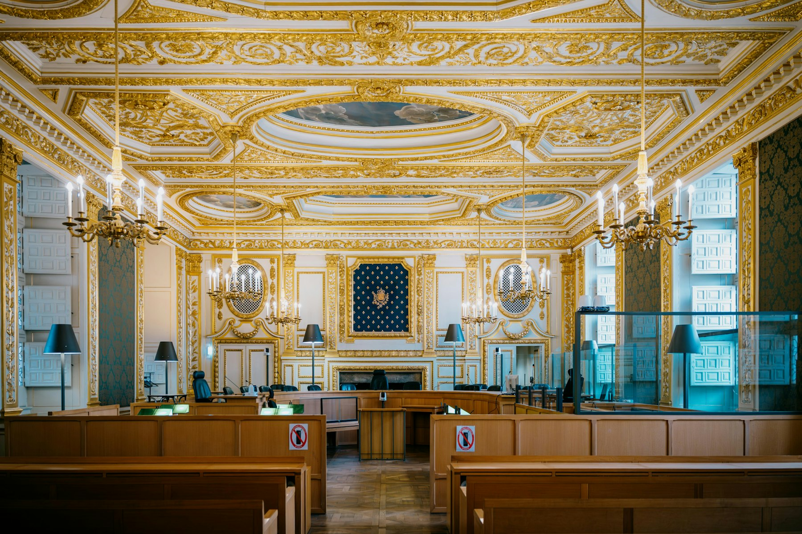

حلول قانونية مدروسة،
ورؤية واضحة لحقوقك
يشكل العمل القانوني للشركات والأعمال والاستثمار جانبًا رئيسيًا من خدمات المكتب، إلى جانب مساندة الأفراد في الاستشارات والعقود والتقاضي. نبدأ بفهم الوقائع والمستندات ونوضح المسارات والإجراءات بحسب كل حالة.
01 الاستشارة تبدأ بفهم التفاصيلالأعمال والاستثمار،
في قلب الممارسة القانونية.
يتناول جانب رئيسي من عمل المكتب تأسيس الشركات ومتابعة شؤونها القانونية، وخدمات المستثمرين والمشروعات، إلى جانب التقاضي والعقود والعقارات وشؤون الأجانب. يُحدد نطاق كل خدمة وفق النشاط والوقائع والمستندات والإجراءات السارية.
استكشف خدمات الشركات والاستثمار ←تأسيس الشركات والمنشآت
اختيار الهيكل القانوني وإعداد المستندات ومتابعة إجراءات التأسيس.
اعرف المزيد ← 02الاستثمار والمشروعات الصناعية
مراجعة قانونية للمستندات والإجراءات المرتبطة بالمشروعات.
اعرف المزيد ←
03القضايا والمنازعات
متابعة الملفات المدنية والتجارية والجنائية وغيرها بحسب الحالة.
اعرف المزيد ← 04
04العقارات والأراضي
مراجعة المستندات والعقود والإجراءات والنزاعات العقارية.
اعرف المزيد ← 05صياغة ومراجعة العقود
صياغة البنود وتوضيح الالتزامات والمخاطر بحسب المعاملة.
اعرف المزيد ← 06الإقامات وشؤون الأجانب
مراجعة المستندات ومتابعة إجراءات الإقامة وفق الحالة القانونية.
اعرف المزيد ← 07الاستشارات القانونية
مناقشة الوقائع والمستندات وتوضيح المسارات الممكنة.
اعرف المزيد ←من الفكرة إلى
المتابعة القانونية.
مسار تأسيس وإجراءات واضح، مع مراعاة طبيعة النشاط والقواعد والإجراءات السارية.
اكتشف خدمات الشركاتخطوات مترابطة،
ومتابعة قانونية بحسب الحاجة.
عندما تصبح
المسألة نزاعًا
تبدأ المعالجة بفهم الوقائع والمستندات، ثم تحديد المسار القانوني والإجراءات المناسبة لكل ملف.
مجالات التقاضيالعقار يبدأ من
مستند صحيح.
من مراجعة المستندات وصياغة العقود إلى الإجراءات ومنازعات الملكية والحيازة، لكل تفصيل أثره القانوني.
استكشف المجال ←الإقامات وشؤون الأجانب
استشارات قانونية ومتابعة للمستندات والإجراءات المتعلقة بالإقامة والاستثمار، وفق الحالة القانونية.
تفاصيل الخدمةنماذج من الأعمال القانونية
مساحة مخصصة لعرض نماذج فعلية بعد اعتمادها. لا تتضمن هذه الصفحة ملفات أو مستندات غير منشورة من المكتب.
الأستاذ / إسلام عاطف شريف
محامٍ – مؤسس ومدير المكتب
بدأ الأستاذ إسلام عاطف شريف مسيرته القانونية منذ عام 2019، وتركزت خبرته العملية في مجالات التقاضي والمنازعات والإجراءات القانونية والاستشارات وصياغة العقود والمستندات، إلى جانب أعمال الشركات والاستثمار والعقارات والمشروعات.
عن المكتب والمؤسس ←